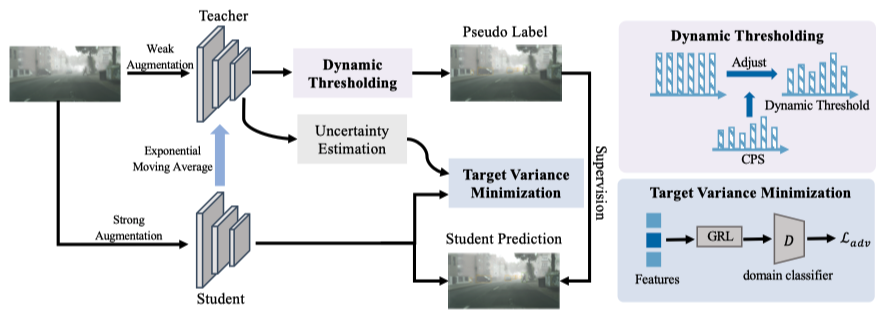
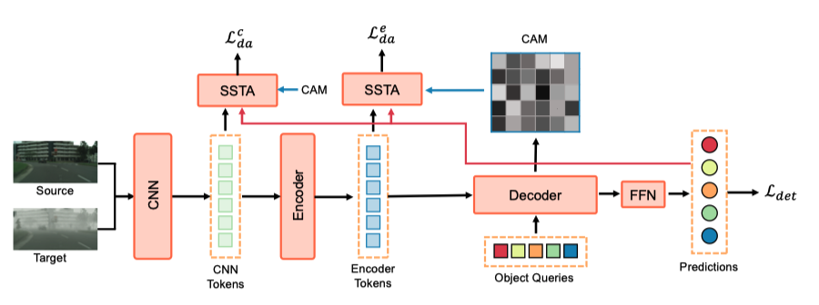

Jinhong Deng
Ph.D. Student at SCSE, UESTC
I am currently a Ph.D student in the School of Computer Science and Engineering, University of Electronic Science and Technology of China (SCSE, UESTC), supervised by Prof. Lixin Duan and Prof. Wen Li. Before that, I obtained the B.Eng degree from the School of Information Science and Technology, Southwest Jiaotong University (SIST, SWJTU) in 2019. My general research interest lies in building a robust visual system capable of effectively operating in dynamic open environments, with a particular focus on object detection. I am devoted to cross-domain object detection and open-vocabulary object detection, which poses the challenges of distribution shift and out-of-category in the real-world application of object detection. By tackling these challenges, my research endeavors enhance the performance, adaptability, and practicality of object detection systems in practical settings.
Email: jhdengvision AT gmail.com, [Google Scholar], [GitHub].
Updates
- 2024.06: Very glad to attend the Doctoral Consortium at The 2024 IEEE Conference on Artificial Intelligence in Singapore and give a presentation about my researchs titled "Robust Object Detection in Open Environments."
- 2024.03: One paper have been accepted by TCSVT, 2024.
- 2024.02: One paper have been accepted by IEEE Transactions on Automation Science and Engineering, 2024.
- 2023.11: One paper have been accepted by IEEE Transactions on Multimedia, 2023.
- 2023.03: One paper have been accepted by CVPR 2023.
- 2022.06: One paper have been accepted by ECCV 2022.
- 2022.03: Two papers have been accepted by CVPR 2022.
- 2022.03: Serve as a reviewer for ECCV 2022.
- 2021.12: Our paper on source free domain adaptation has been accepted by AAAI 2022 for oral presentation.
- 2021.11: Serve as a reviewer for CVPR 2022.
- 2021.07: Our paper on cross-domain semantic segmentation has been accepted by ICCV 2021 for oral presentation.
- 2021.09: I start my Ph.D study at SCSE, UESTC.
- 2021.03: Our paper on cross-domain object detection is accepted by CVPR 2021.
- 2019.09: I start my Master study at SCSE, UESTC.
Publications
|  |
Balanced Teacher for Source-free Object Detection
Jinhong Deng, Wen Li, Lixin Duan.
IEEE Transactions on Circuits and Systems for Video Technology, 2024.
[paper]
|
|  |
Domain Adaptive Detection of MAVs: A Benchmark and Noise Suppression Network
Yin Zhang, Jinhong Deng, Peidong Liu, Wen Li, Shiyu Zhao.
IEEE Transactions on Automation Science and Engineering, 2024.
[paper]
|
|
Cross-domain Detection Transformer based on Spatial-aware and Semantic-aware Token Alignment
Jinhong Deng, Xiaoyue Zhang, Wen Li, Lixin Duan, Dong Xu.
IEEE Transactions on Multimedia, 2023.
[paper]
|
Experiences
|
|
2021.09—Future: Ph.D student at SCSE, UESTC |
|
|
2019.09—2021.05: Master student at SCSE, UESTC |
|
2015.09—2019.05: Undergraduate student at Southwest Jiaotong University |
Honors & Awards
Professional Activities
- Conference Review CVPR 2022, ECCV 2022, CVPR 2023, ICCV 2023, CVPR 2024.
- Journal Review Neurocomputing, TCSVT, TIP.
Skills
- Programming: Python, LaTex, C/C++, Java
- Framework: Pytorch
- Languages: English(CET-6 565), Chinese(native speaker)
- Hobbies and Interests: Swimming, Badminton, Books